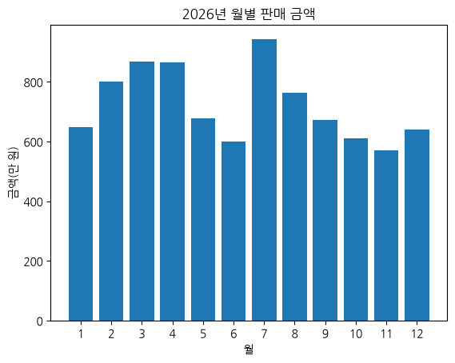

[10주차] 다중 파일의 일괄 처리
컴퓨터활용
10주차
다중 파일의 일괄 처리
2027학년도 「컴퓨터활용」의 준비 중인 교재입니다. 편집 상태를 검토하기 위해 미리 공개한 것으로, 수업 전에 내용과 순서가 바뀔 수 있습니다.
학사 12주차 · 교재 10 · 3부 파이썬
본 장은 엑셀로 수행하기에 번거로운 작업을 다룬다. 월별 판매 파일 12개를 하나의 표로 병합하여 연간 집계표와 차트를 생성하고, 병합한 자료를 거래처별 파일로 분리하여 저장한다. 엑셀에서는 파일을 하나씩 열어 자료를 복사하고 붙여 넣는 조작을 파일의 수만큼 반복하여야 하나, 코드에서는 파일의 수와 무관하게 한 번의 실행으로 완료된다. 병합의 정확성은 병합한 자료의 1월 합계를 4장 「기본 함수」의 수작업 결과와 대조하여 검증한다.
수업은 실습 노트북을 위에서부터 실행하며 진행한다. 강의안의 절 번호는 노트북의 절 번호와 일치한다.
학습 목표
- 폴더에서 이름의 형태가 일치하는 파일의 목록을 작성할 수 있다.
- 예시:
판매_2026_*.xlsx의 형태로 월별 파일 12개를 한 번에 지정한다.
- 예시:
- 주어진 코드를 실행하여 여러 엑셀 파일을 하나의 표로 병합하고 행의 수와 합계로 검산할 수 있다.
- 예시: 병합한 자료의 1월 합계 6479000이 4장의
G25와 일치함을 확인한다.
- 예시: 병합한 자료의 1월 합계 6479000이 4장의
- 병합한 자료에서 월별 집계표와 차트를 생성하여 파일로 저장할 수 있다.
- 예시: 9장의
pivot_table에서index만 변경하여 월별 금액 합계를 산출한다.
- 예시: 9장의
- 병합한 자료를 지정한 열의 값에 따라 여러 파일로 분리하여 저장할 수 있다.
- 예시: 거래처별 파일 5개를 생성하고 행의 수의 합이 266임을 확인한다.
준비 사항
| 항목 | 내용 |
|---|---|
| 실행 환경 | 실습 사이트의 컴퓨터활용 폴더와 자료 폴더 |
| 자료 | 자료 폴더의 월별 파일 12개(판매_2026_01.xlsx ~ 판매_2026_12.xlsx). 자료 폴더에 다른 파일을 두지 않는다 |
| 실습 노트북 | Office_10주차_실습_학생용.ipynb를 컴퓨터활용 폴더에 올리고 이름을 실습_10_학번.ipynb로 변경한다 |
| 수작업 결과 | 4장의 금액 합계(판매현황_04_학번.xlsx의 G25) |
1. 엑셀과의 비교
1-1. 대응 관계
| 작업 | 엑셀 | 파이썬 |
|---|---|---|
| 12개 파일의 병합 | 파일을 하나씩 열어 자료 범위를 복사하고, 하나의 시트에 이어서 붙여 넣는다. 12회 반복한다 | 파일의 목록을 작성하고, 목록의 파일을 차례로 읽어 이어 붙인다 |
| 연간 집계표 | 병합한 시트에 금액 열과 월 열을 추가하고 피벗 테이블을 작성한다 | 9장의 pivot_table을 그대로 사용한다 |
| 거래처별 분리 | 필터로 거래처를 선별하고, 결과를 복사하여 새 통합 문서에 붙여 넣고, 이름을 지정하여 저장한다. 거래처의 수만큼 반복한다 | 거래처별로 묶어 묶음마다 파일로 저장한다 |
1-2. 수작업 반복의 문제
엑셀에서 2개의 파일을 병합하는 조작은 다음과 같다. 5장에서 선별한 행을 다른 시트에 붙여 넣은 조작과 같은 종류이다.
- 두 번째 파일을 열어 머리글을 제외한 자료 범위를 선택하고 복사한다.
- 첫 번째 파일의 자료가 끝나는 다음 행을 찾아 붙여 넣는다.
이 조작을 12개의 파일에 대하여 반복할 때에는 두 가지 문제가 있다. 첫째, 반복의 횟수에 비례하여 시간이 소요된다. 둘째, 반복 중에 머리글을 함께 복사하거나, 범위의 마지막 행을 빠뜨리거나, 파일 하나를 누락하거나, 같은 파일을 두 번 붙여 넣는 오류가 발생하여도 발견하기 어렵다. 266행의 자료에서 한 행의 누락은 눈으로 확인되지 않는다.
코드는 파일이 12개이든 120개이든 동일하며, 모든 파일에 동일한 절차가 적용된다. 다만 코드의 결과도 검증하여야 한다. 본 장에서는 병합한 행의 수, 연간 합계, 그리고 병합한 자료에서 1월만 선택한 합계의 세 가지로 검산한다.
2. 파일 목록의 작성
2-1. 파일의 탐색
import pandas as pd
from pathlib import Path
files = sorted(Path("자료").glob("판매_2026_*.xlsx"))
len(files)| 표기 | 의미 |
|---|---|
from pathlib import Path |
폴더와 파일의 위치를 다루는 도구 Path를 불러온다 |
Path("자료") |
자료 폴더를 가리킨다 |
.glob("판매_2026_*.xlsx") |
폴더에서 이름의 형태가 일치하는 파일을 모두 찾는다. *는 “어떤 문자열이든”을 의미한다 |
sorted(…) |
찾은 파일을 이름순으로 정렬한다 |
len(files) |
목록에 있는 파일의 수. 12이어야 한다 |
*는 파일 탐색기의 검색에서 사용하는 것과 같은 표기이다. 판매_2026_*.xlsx는 판매_2026_01.xlsx부터 판매_2026_12.xlsx까지와 일치한다. *의 앞뒤에 글자를 더하면 일치하는 범위가 좁아진다.
| 형태 | 일치하는 파일 | 파일의 수 |
|---|---|---|
판매_2026_*.xlsx |
1~12월 | 12 |
판매_2026_0*.xlsx |
월이 0으로 시작하는 1~9월 | 9 |
판매_2026_1*.xlsx |
월이 1로 시작하는 10~12월 | 3 |
*.xlsx |
폴더의 모든 엑셀 파일 | 폴더의 내용에 따라 다르다 |
2-2. 파일 이름의 규칙
1장 「파일 관리와 데이터 입력」에서 파일 이름을 일정한 규칙으로 부여한 이유가 여기에 있다. 이름에 규칙이 없으면 파일을 한 번에 지정할 수 없다. 월을 1, 2가 아닌 01, 02의 두 자리로 표기한 것도 같은 이유이다. 이름순으로 정렬하면 1, 10, 11, 12, 2의 순서가 되나, 두 자리로 표기하면 01, 02, …, 12의 순서가 유지된다.
자료 폴더에 형태가 일치하는 다른 파일이 있으면 그 파일도 목록에 포함된다. 결과 파일을 결과 폴더에 따로 저장하는 이유이다(9장). 목록을 작성한 뒤에는 반드시 파일의 수를 확인한다.
따라 하기
실습 노트북의 2절에 있는 셀을 차례로 실행한다.
- 라이브러리를 불러오는 셀과 파일 목록을 작성하는 셀을 실행한다. 결과는 12이다.
- 첫 파일과 마지막 파일을 표시하는 셀을 실행한다.
- 다음 셀의
____에 1~9월의 파일만 일치하도록 한 글자를 기재하여 실행한다.- 확인 1 결과가 9이다.
- 다음 셀의
____에 10~12월의 파일만 일치하도록 한 글자를 기재하여 실행한다.- 확인 2 결과가 3이다.
3. 파일의 병합
3-1. 목록
대괄호 안에 여러 값을 쉼표로 구분하여 나열한 것을 목록이라고 한다. files는 파일 12개의 위치가 차례로 들어 있는 목록이다. 목록은 직접 기재하여 만들 수도 있다.
q1_files = ["자료/판매_2026_01.xlsx", "자료/판매_2026_02.xlsx", "자료/판매_2026_03.xlsx"]3-2. 반복
for f in files:
print(f)| 표기 | 의미 |
|---|---|
for f in files: |
files의 항목을 하나씩 f에 넣으며, 아래에 들여 쓴 줄을 항목마다 반복하여 실행한다. 줄의 끝에 콜론(:)을 둔다 |
| 들여 쓴 줄 | 반복하여 실행되는 줄. 줄의 앞에 공백 4개를 둔다 |
위의 코드는 파일의 위치를 12줄로 출력한다. print(f)가 12회 실행된 것이다. 반복할 줄은 반드시 들여 쓴다. 들여쓰기가 없으면 반복의 대상으로 인식되지 않아 오류가 발생한다. 들여쓰기는 엑셀에 대응하는 것이 없는 표기이며, 파이썬에서는 들여쓰기가 “이 줄이 위의 for에 속한다”는 뜻을 나타낸다.
print(f)의 자리에 파일을 읽는 코드를 두면 12개의 파일을 차례로 읽는다.
tables = []
for f in files:
tables.append(pd.read_excel(f))| 표기 | 의미 |
|---|---|
tables = [] |
읽은 표를 담을 빈 목록을 만든다 |
tables.append(…) |
읽은 표를 목록의 끝에 추가한다 |
반복이 끝나면 tables에는 12개의 표가 들어 있다. 엑셀에서 12개의 통합 문서를 모두 열어 둔 상태에 해당한다.
3-3. 이어 붙이기
year = pd.concat(tables, ignore_index=True)
year.shapeconcat은 여러 표를 위아래로 이어 붙여 하나의 표로 만든다. 열의 이름이 같은 열끼리 이어지므로, 12개 파일의 열 구성이 동일하여야 한다. ignore_index=True는 행 번호를 0부터 다시 부여한다는 지정이다. 이 지정이 없으면 파일마다 0부터 시작하는 행 번호가 그대로 남아 같은 번호가 여러 번 나타난다. 결과의 크기는 (266, 6)이다.
머리글은 read_excel이 파일마다 열의 이름으로 처리하므로 병합한 표에는 머리글이 한 번만 나타난다. 엑셀에서 머리글을 제외하고 복사하여야 하였던 주의가 필요하지 않다.
따라 하기
실습 노트북의 3절에 있는 셀을 차례로 실행한다.
for f in files:와print(f)의 셀을 실행하여 파일의 위치가 12줄로 출력되는 것을 확인한다.- 파일을 읽어
tables에 추가하는 셀과concat의 셀을 실행한다. 크기는(266, 6)이다. - 1분기의 파일 3개를 직접 기재한 셀에서
____에 세 번째 파일의 월을 기재하여 실행한다.- 확인 3 병합한 표의 크기가
(64, 6)이다. 1~3월의 행 수 20, 19, 25의 합이다.
- 확인 3 병합한 표의 크기가
- 다음 셀을 실행한다.
- 확인 4 1분기의 금액 합계가 23182000이다. 1~3월의 합계 6,479,000, 8,016,000, 8,687,000의 합이다.
4. 열의 추가와 검산
4-1. 금액 열과 월 열
year["금액"] = year["수량"] * year["단가"]
year["월"] = year["판매일"].dt.monthyear["판매일"].dt.month는 날짜에서 월의 숫자만 추출한다. 판매일이 2026-03-17이면 3이 산출된다. 월 열은 월별 집계의 기준으로 사용한다. 12개의 파일을 병합하면 각 행이 어느 파일에서 왔는지의 정보가 사라지므로, 판매일에서 월을 다시 얻는 것이다. dt는 날짜 열에 대해서만 사용할 수 있다. 엑셀에서 판매일을 날짜로 입력하지 않고 문자로 입력하였다면(1장) 이 계산은 수행되지 않는다.
4-2. 검산
검산은 처리의 결과를 이미 알고 있는 값과 대조하는 것이다. 9장의 조건에 의한 선택으로 1월의 행만 남긴 뒤 금액을 합산한다.
print("연간 금액 합계:", year["금액"].sum())
print("1월 금액 합계 :", year[year["월"] == 1]["금액"].sum())| 검산 항목 | 기준 값 | 근거 |
|---|---|---|
| 병합한 행의 수 | 266 | 월별 파일의 행 수의 합 |
| 연간 금액 합계 | 86611000 | 월별 금액 합계의 합 |
| 1월 금액 합계 | 6479000 | 4장의 수작업 결과 |
| 2월 금액 합계 | 8016000 | 9장에서 2월 파일로 산출한 값, 4장의 따라 하기에서 엑셀로 산출한 값 |
266행이라는 값은 눈으로 확인할 수 없다. 그러나 병합한 자료에서 1월만 선택한 합계가 수강생이 직접 엑셀로 산출한 값과 일치하면, 적어도 1월의 자료는 누락이나 중복 없이 병합되었다고 판단할 수 있다. 일부를 이미 알고 있는 값과 대조하여 전체의 정확성을 추정하는 방법은 11장과 12장에서 AI가 작성한 수식과 코드를 검증할 때에도 사용한다.
따라 하기
실습 노트북의 4절에 있는 셀을 차례로 실행한다.
- 금액 열과 월 열을 추가하는 셀, 연간 합계와 1월 합계를 출력하는 셀을 실행한다.
- 다음 셀의
____에 2를 기재하여 실행한다.- 확인 5 2월의 금액 합계가 8016000이다.
- 월별 판매 건의 수를 산출하는 셀의
____에 개수를 세는 지정 값을 기재하여 실행한다.- 확인 6 월별 건수가 1월 20, 2월 19, 3월 25, …, 12월 21이고 합이 266이다.
5. 연간 집계표와 차트
5-1. 월별 집계표
Path("결과").mkdir(exist_ok=True)
monthly = year.pivot_table(index="월", values="금액", aggfunc="sum")
monthly.to_excel("결과/연간집계_2026.xlsx")9장의 pivot_table에서 index만 "월"로 변경한 것이다. Path("결과").mkdir(exist_ok=True)는 9장의 os.makedirs와 같이 폴더를 생성한다.
| 월 | 금액 합계 | 월 | 금액 합계 |
|---|---|---|---|
| 1 | 6,479,000 | 7 | 9,431,000 |
| 2 | 8,016,000 | 8 | 7,635,000 |
| 3 | 8,687,000 | 9 | 6,732,000 |
| 4 | 8,643,000 | 10 | 6,106,000 |
| 5 | 6,765,000 | 11 | 5,705,000 |
| 6 | 5,998,000 | 12 | 6,414,000 |
index를 "거래처"로 변경하면 거래처별 연간 금액 합계가 산출된다. 같은 자료에서 집계의 기준만 바꾸어 여러 집계표를 얻을 수 있다.
5-2. 차트
import matplotlib.pyplot as plt
import koreanize_matplotlib
plt.bar(monthly.index, monthly["금액"] / 10000)
plt.title("2026년 월별 판매 금액")
plt.xlabel("월")
plt.ylabel("금액(만 원)")
plt.xticks(monthly.index)
plt.savefig("결과/월별금액_2026.png", dpi=150, bbox_inches="tight")
plt.show()차트를 작성하는 라이브러리는 matplotlib이며, koreanize_matplotlib은 차트의 한글이 깨지지 않게 한다. 각 줄은 5장에서 엑셀로 작성한 차트의 구성 요소와 대응한다.
| 엑셀의 차트(5장) | 코드 |
|---|---|
| 묶은 세로 막대형 차트의 삽입 | plt.bar(가로 축의 값, 세로 축의 값) |
| 차트 제목 | plt.title(…) |
| 가로 축 제목, 세로 축 제목 | plt.xlabel(…), plt.ylabel(…) |
| 그림으로 저장 | plt.savefig(…) |
monthly.index는 집계표의 행 이름(1~12)이며 가로 축의 값으로 사용한다.- 금액은 10000으로 나누어 만 원 단위로 표시한다. 나누지 않으면 세로 축의 눈금이 지수 형태로 표시되어 읽기 어렵다.
plt.xticks(monthly.index)는 가로 축에 1부터 12까지의 눈금을 모두 표시한다.plt.savefig는plt.show보다 먼저 실행하여야 한다. 순서가 바뀌면 빈 그림이 저장된다.
엑셀의 차트는 마우스로 구성 요소를 추가하므로 같은 차트를 다시 만들려면 조작을 반복하여야 한다. 코드의 차트는 자료가 변경되어도 다시 실행하면 같은 형식의 차트가 생성된다.

따라 하기
실습 노트북의 5절에 있는 셀을 차례로 실행한다.
- 월별 집계표를 산출하여 저장하는 셀과 차트를 작성하는 셀을 실행한다. 차트의 제목과 축 제목이 한글로 표시되는지 확인한다.
- 다음 셀의
____에 거래처 열의 이름을 기재하여 실행한다.- 확인 7 대한사무기 17519000, 동아문구 14111000, 미래유통 15298000, 서울오피스 18997000, 한빛상사 20686000이다. 다섯 값의 합은 연간 금액 합계 86611000과 같다.
6. 조건별 분리 저장
6-1. 묶음과 반복
Path("결과/거래처별").mkdir(parents=True, exist_ok=True)
for name, part in year.groupby("거래처"):
part.to_excel(f"결과/거래처별/판매_2026_{name}.xlsx", index=False)
print(name, len(part), "행")| 표기 | 의미 |
|---|---|
mkdir(parents=True, exist_ok=True) |
결과 폴더 안에 거래처별 폴더를 생성한다. parents=True는 상위 폴더가 없으면 함께 생성한다는 지정이다 |
year.groupby("거래처") |
거래처의 값이 같은 행끼리 묶는다. 거래처가 5개이므로 묶음도 5개이다 |
for name, part in …: |
묶음마다 거래처의 이름을 name에, 해당 행을 part에 넣고 들여 쓴 줄을 실행한다 |
f"…{name}.xlsx" |
9장의 {month}와 같이 파일 이름에 거래처의 이름이 들어간다 |
index=False |
pandas의 행 번호를 파일에 저장하지 않는다 |
들여 쓴 줄이 2개이므로 두 줄이 모두 묶음마다 실행된다. 저장이 5회, 출력이 5회 수행된다.
6-2. 분리 결과의 검산
실행하면 결과/거래처별 폴더에 파일 5개가 생성된다.
| 파일 | 행의 수 |
|---|---|
판매_2026_대한사무기.xlsx |
45 |
판매_2026_동아문구.xlsx |
46 |
판매_2026_미래유통.xlsx |
57 |
판매_2026_서울오피스.xlsx |
54 |
판매_2026_한빛상사.xlsx |
64 |
5개 파일의 행의 수를 합하면 266이며 병합한 행의 수와 같다. 분리의 과정에서 누락되거나 중복된 행이 없음을 의미한다. 저장한 파일을 read_excel로 다시 읽어 행의 수와 합계를 확인할 수도 있다.
병합한 자료 전체도 하나의 파일로 저장한다.
year.to_excel("결과/판매_2026_연간.xlsx", index=False)저장한 파일을 엑셀로 열면 판매일이 2026-01-02 00:00:00과 같이 시각과 함께 표시된다. 값의 오류가 아니며, 2장 「셀 서식과 인쇄 설정」의 방법으로 날짜 표시 형식을 지정하면 된다.
따라 하기
실습 노트북의 6절에 있는 셀을 차례로 실행한다.
- 거래처별로 분리하여 저장하는 셀을 실행한다. 거래처의 이름과 행의 수가 5줄로 출력된다.
- 병합한 자료 전체를 저장하는 셀을 실행한다.
- 한빛상사의 파일을 다시 읽는 셀을 실행한다.
- 확인 8 표의 크기가
(64, 8)이다. 원본의 6개 열에 금액 열과 월 열이 추가되어 있다. - 확인 9 금액의 합계가 20686000이다. 5절의 따라 하기에서 산출한 한빛상사의 연간 금액과 같다.
- 확인 8 표의 크기가
7. 핵심 실습: 월별 파일의 병합과 분리
월별 파일 12개를 병합하여 연간 집계표를 생성하고, 거래처별 파일로 분리하여 저장한 뒤, 결과를 기준 값과 대조한다.
| 항목 | 내용 |
|---|---|
| 결과물 | 실습_10_학번.ipynb, 결과/판매_2026_연간.xlsx, 결과/연간집계_2026.xlsx, 결과/월별금액_2026.png, 결과/거래처별/판매_2026_<거래처>.xlsx 5개 |
| 입력 | 자료 폴더의 월별 파일 12개 |
| 대조 대상 | 4장의 금액 합계와 아래의 기준 값 |
절차
단계 1. 병합, 집계, 분리의 실행
- 노트북의 7절 가의 셀에서
____3곳을 채운다. 파일 이름의 형태, 월별 집계의 기준이 되는 열, 분리의 기준이 되는 열의 세 가지이다. - 셀을 실행한다.
- 확인 10 파일 수 12, 병합한 행의 수 266, 연간 금액 합계 86611000, 1월 금액 합계 6479000, 분리한 파일 수 5가 출력되었다.
단계 2. 기준 값과의 대조
판매현황_04_학번.xlsx를 엑셀로 열어G25의 값을 확인한다.- 노트북의 7절 나의 셀에서
____에 확인한 값을 숫자로 기재하여 실행한다.- 확인 11 출력된 표의 “일치” 열이 5행 모두
True이다.
- 확인 11 출력된 표의 “일치” 열이 5행 모두
단계 3. 전체 재실행과 저장
- 메뉴의
[Kernel] → [Restart Kernel and Run All Cells...]를 실행한다. - 노트북을 맨 아래까지 내려 오류가 표시된 셀이 없는지 확인한다. 연습 문제의 빈 셀은 오류 없이 지나간다.
- 확인 12 모든 코드 셀에 실행 번호가 차례로 부여되었고 붉은색의 오류 출력이 없다.
Ctrl + S로 노트북을 저장한다.
단계 4. 결과 파일의 확인
- 파일 탐색기에서
결과폴더를 열어 완료 기준의 결과 파일이 모두 있는지 확인한다. 결과/거래처별/판매_2026_한빛상사.xlsx를 내려받아 엑셀로 연다.C열(거래처)의 아무 셀이나 선택하고 필터를 켜서 값의 목록을 확인한다(5장).- 확인 13 거래처의 값이 한빛상사 하나뿐이고, 자료가 2행부터 65행까지 64행이다.
- 노트북,
연간집계_2026.xlsx,월별금액_2026.png를 내려받아 수강생 PC의컴퓨터활용\실습폴더로 옮긴다.- 확인 14
월별금액_2026.png를 열면 막대 12개의 차트가 표시된다. 가장 높은 막대는 7월이다.
- 확인 14
완료 기준
| 번호 | 점검 항목 | 점검 방법 | 기준 값 |
|---|---|---|---|
| 1 | 파일의 수 | 7절 가의 출력 | 12 |
| 2 | 병합한 행의 수 | 7절 가의 출력 | 266 |
| 3 | 연간 금액 합계 | 7절 가의 출력 | 86611000 |
| 4 | 병합한 자료의 1월 금액 합계 | 7절 가의 출력, 4장의 G25 |
6479000 |
| 5 | 분리한 파일의 수 | 7절 가의 출력 | 5 |
| 6 | 기준 값과의 대조 | 7절 나의 출력 | “일치” 열 5개가 모두 True |
| 7 | 결과 파일 | 파일 탐색기의 결과 폴더 |
판매_2026_연간.xlsx, 연간집계_2026.xlsx, 월별금액_2026.png, 거래처별 폴더의 파일 5개 |
제출
실습_10_학번.ipynb, 연간집계_2026.xlsx, 월별금액_2026.png를 제출한다. 판매_2026_연간.xlsx와 거래처별 파일 5개는 내려받아 보관하되 제출하지 않는다. 노트북의 출력으로 확인할 수 있기 때문이다. 제출 방법은 부록 A를 따른다.
빈번한 오류와 해결
| 증상 | 원인 | 해결 |
|---|---|---|
| 파일의 수가 0이다 | 자료 폴더의 위치나 이름이 다르거나, glob의 형태에 오타가 있다 |
파일 탐색기에서 폴더 구성을 확인하고 형태를 판매_2026_*.xlsx로 기재한다 |
| 파일의 수가 12보다 많고 병합한 행의 수가 266보다 많다 | 자료 폴더에 형태가 일치하는 다른 파일(결과 파일의 사본 등)이 있다 |
해당 파일을 자료 폴더에서 삭제하거나 이동한다 |
ValueError: No objects to concatenate |
파일의 수가 0인 상태에서 병합을 실행하였다 | 파일 목록을 먼저 해결한다 |
IndentationError: expected an indented block |
for의 아래 줄을 들여 쓰지 않았다 |
반복할 줄의 앞에 공백 4개를 둔다 |
SyntaxError: expected ':' |
for 줄의 끝에 콜론을 두지 않았다 |
줄의 끝에 :를 기재한다 |
AttributeError: Can only use .dt accessor with datetimelike values |
판매일 열이 날짜가 아닌 문자로 읽혔다. 월별 파일을 엑셀에서 수정하여 다시 저장한 경우에 발생할 수 있다 | 자료 폴더의 파일을 배포된 원본으로 교체한다 |
| 차트의 한글이 네모로 표시된다 | koreanize_matplotlib이 설치되어 있지 않거나 불러오지 않았다 |
담당 교수에게 알린다 |
| 저장된 그림 파일이 비어 있다 | plt.savefig가 plt.show의 뒤에 있다 |
savefig를 show의 앞으로 옮긴다 |
저장한 엑셀 파일에서 판매일이 2026-01-02 00:00:00으로 표시된다 |
날짜에 시각이 함께 저장되었다. 값의 오류가 아니다 | 엑셀에서 날짜 표시 형식을 지정한다 |
재실행 후 결과/거래처별의 파일 수가 5보다 많다 |
이전의 실행에서 다른 기준으로 저장한 파일이 남아 있다 | 해당 폴더의 파일을 삭제하고 다시 실행한다 |
심화 실습
핵심 실습을 완료한 수강생은 분리의 기준을 변경한다.
- 6절의 분리 저장 코드를 복사하여 노트북의 “심화 실습” 절에 있는 셀에 붙여 넣는다.
- 거래처별이 아닌 품목별로 분리하여
결과/품목별폴더에 저장하도록 수정한다. 변경할 곳은 폴더의 이름 2곳과 묶는 기준 1곳이다. - 생성된 파일의 수가 품목의 수(5)와 같은지, 출력된 행의 수(A4 복사용지 53, 볼펜 50, 점착 메모지 57, 토너 53, 파일 폴더 53)의 합이 266인지 확인한다.
연습 문제
노트북의 “연습 문제” 절에 있는 빈 셀에 코드를 작성한다. 절차는 제시하지 않는다.
- 4분기(10~12월)의 파일 3개만 병합하여 행의 수와 금액의 합계를 출력한다.
glob의 형태를 변경하는 방법과 파일의 목록을 직접 기재하는 방법 가운데 하나를 사용한다. 기준 값은 66행, 18225000이다. - 병합한 자료
year에서 품목별 연간 금액 합계표를 산출하여결과/품목별집계_2026.xlsx로 저장한다. 기준 값은 A4 복사용지 33264000, 볼펜 11040000, 점착 메모지 8328000, 토너 19975000, 파일 폴더 14004000이며 합은 86611000이다. - 5절의 따라 하기에서 산출한 거래처별 연간 금액 합계표
by_customer를 세로 막대형 차트로 작성하여결과/거래처별금액_2026.png로 저장한다. 차트 제목은 “2026년 거래처별 판매 금액”, 가로 축 제목은 “거래처”, 세로 축 제목은 “금액(만 원)”으로 한다. 막대가 가장 높은 거래처는 한빛상사이다.
개념 점검
- 월별 파일의 이름을
판매_2026_1.xlsx가 아닌판매_2026_01.xlsx로 부여한 이유를 본 장의 내용으로 설명하시오. for f in files:의 아래 줄을 들여 쓰지 않으면 어떻게 되는가. 들여쓰기는 무엇을 나타내는가.- 병합한 자료가 266행임을 눈으로 확인할 수 없을 때, 병합이 정확히 수행되었다고 판단할 수 있는 근거는 무엇인가.
자료폴더에판매_2026_연간.xlsx를 올려 두고 7절의 코드를 실행하면 어떠한 결과가 발생하는가. 이를 방지하기 위하여 본 과목에서 사용한 방법은 무엇인가.- 엑셀에서 12개의 파일을 수작업으로 병합할 때 발생할 수 있는 오류를 두 가지 이상 들고, 코드에서는 그 오류가 발생하지 않는 이유를 기술하시오.
정리
| 용어 | 의미 |
|---|---|
glob |
폴더에서 이름의 형태가 일치하는 파일을 찾는다. *는 임의의 문자열이다 |
| 목록 | 대괄호 안에 여러 값을 차례로 나열한 것 |
for |
목록의 항목마다 들여 쓴 줄을 반복하여 실행한다 |
concat |
여러 표를 위아래로 이어 붙인다 |
dt.month |
날짜 열에서 월을 추출한다 |
groupby |
지정한 열의 값이 같은 행끼리 묶는다 |
| 검산 | 행의 수와 합계를 이미 알고 있는 값과 대조하여 처리의 정확성을 확인하는 것 |
3부에서는 엑셀로 수행한 계산과 집계를 코드로 수행하였으며(8~9장), 엑셀로는 번거로운 다중 파일 처리를 코드로 수행하였다(10장). 세 장에서 사용한 코드는 모두 주어진 것이었다. 4부에서는 이러한 수식과 코드를 생성형 AI에게 작성하게 하고, 그 결과를 수작업 결과로 검증하는 방법을 다룬다. 본 장까지가 기말고사의 범위이다(교재 07~10).
참고 자료
확인일은 2026-11-13이다.
| 자료 | 주소 | 본문에서 근거로 삼은 내용 |
|---|---|---|
Python 공식 문서, pathlib |
https://docs.python.org/ko/3/library/pathlib.html | Path.glob의 형태 표기, mkdir |
pandas 공식 문서, pandas.concat |
https://pandas.pydata.org/docs/reference/api/pandas.concat.html | 표의 이어 붙이기와 ignore_index |
pandas 공식 문서, pandas.DataFrame.groupby |
https://pandas.pydata.org/docs/reference/api/pandas.DataFrame.groupby.html | 열의 값에 의한 묶음 |
Matplotlib 공식 문서, matplotlib.pyplot.bar |
https://matplotlib.org/stable/api/_as_gen/matplotlib.pyplot.bar.html | 막대형 차트의 작성 |
Matplotlib 공식 문서, matplotlib.pyplot.savefig |
https://matplotlib.org/stable/api/_as_gen/matplotlib.pyplot.savefig.html | 그림 파일로의 저장 |